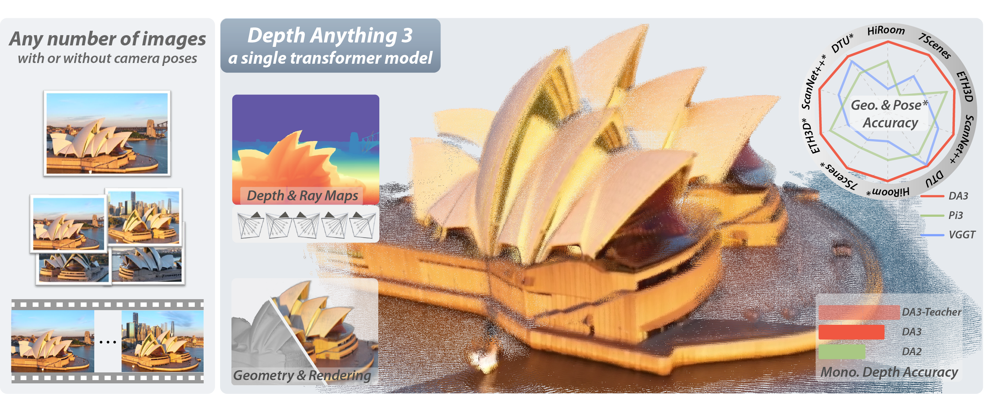

Abstract
We present Depth Anything 3 (DA3), a model that predicts spatially consistent geometry from an arbitrary number of visual inputs, with or without known camera poses. In pursuit of minimal modeling, DA3 yields two key insights: a single plain transformer (e.g., vanilla DINOv2 encoder) is sufficient as a backbone without architectural specialization, and a singular depth-ray prediction target obviates the need for complex multi-task learning. Through our teacher-student training paradigm, the model achieves a level of detail and generalization on par with Depth Anything 2 (DA2). We establish a new visual geometry benchmark covering camera pose estimation, any-view geometry and visual rendering. On this benchmark, DA3 sets a new state-of-the-art across all tasks, surpassing prior SOTA VGGT by an average of 35.7% in camera pose accuracy and 23.6% in geometric accuracy. Moreover, it outperforms DA2 in monocular depth estimation. All models are trained exclusively on public academic datasets.
